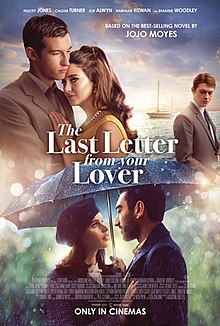
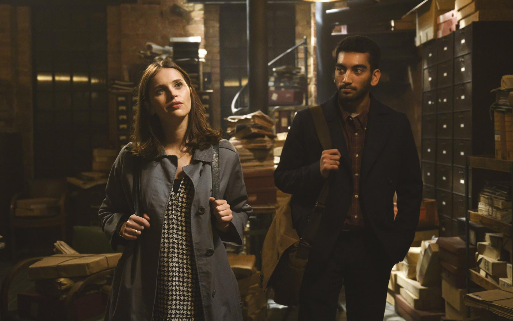

Welcome to the romance page, enjoy from the movies
The weekly movie:The Last Letter From Your Lover
skip the plot and go watch the trailerThe plot:
In the mid-1960s, wealthy socialite Jennifer Stirling suffers from memory loss after a car crash. Unable to remember much of her life before or connect with her husband Laurence, Jennifer is intrigued by a letter she finds between "J" and "Boot". She decides to try and remember what happened to her by following clues from the letter. In modern day London, Ellie Haworth, who recently broke up with her long-time boyfriend, has to write an article about the recently-deceased editor of her paper. Getting past the formal archivist Rory to access the editor's archive, she finds a misfiled love letter, to someone identified as "J", from "Boot". Moved by the passionate feelings between the mysterious couple, Ellie becomes determined to learn their identities and how their love story ended. In the past, a pre-crash Jennifer and her husband Laurence travel to the French Riviera for a summer vacation. Foreign correspondent Anthony O'Hare arrives to interview Laurence about his business success. At the party, Laurence is condescending to both Jennifer and Anthony. Afterwards, a drunk Anthony complains about the awful company to a fellow guest and is caught by Jennifer. Anthony returns the next morning with a written apology, which Jennifer forces him to read aloud. Anthony invites the Stirlings out to eat the next day, but Laurence is called away on a sudden business trip, leaving Jennifer and Anthony to spend the summer together until his return. They begin writing letters to each other, under the pennames "J" and "Boot" (or "B"). Neither act on their growing electricity, until Jennifer impulsively tries to kiss him. When he pulls away, she flees. Some days later, a letter penned by Anthony reaches her, proposing to meet at Postman's Park in London. They start a whirlwind affair, spending moments together where Jennifer can safely be with Anthony. Finally, he proposes she run off with him to New York. Jennifer is hesitant to leave, in fear of being treated as outcast by her family and friends. After Anthony sends her a letter that he will be waiting for her at the train station on the night of his departure, Jennifer rushes off to meet him. Just before she can arrive, she gets into a car crash, with a blow to her head causing partial amnesia. Anthony leaves for New York, believing that Jennifer has rejected him.
Six months after the car crash, Laurence hides the last letter Jennifer received from Anthony in effort to prevent her from remembering the affair. Jennifer feels lost as she struggles to recover her memories. She begins finding several of the love letters from "Boot" hidden in her house, leading her to discover a postal box in her name that Laurence had closed. Jennifer confronts Laurence, who claims Anthony had died in the crash. Four years later, Jennifer bumps into Anthony, restoring her memories of their time together. Anthony once again pleads for her to run away with him, but she refuses out of consideration for her two-year old-daughter. Enraged at Laurence for his lies, Jennifer asserts that she will stay with him because of their daughter, but vows to leave if he mistreats her. In turn, Laurence threatens to ruin Jennifer's reputation and gain sole custody of their daughter, as she would only be seen as an adulteress by the court of law. This prompts Jennifer to escape with their daughter to go with Anthony. After finding out he has checked out of his hotel, she tries finding him at his workplace, but is informed by the editor that Anthony has already left. Forced to return to Laurence, Jennifer gives the bundle of love letters to the editor to be sent to Anthony if they hear back from him. In the present day, Ellie and Rory grow closer as they uncover more of the love letters. After spending the night with Rory, Ellie distances herself from him. She learns that Jennifer and Anthony are both alive and goes to speak with them. After hearing their regrets and pain over their lost romance, Ellie decides to enter into a relationship with Rory, choosing to give romance another try and not live with regrets. Ellie returns to Anthony and encourages him to write one last letter to Jennifer, in which he asks her to meet him once again at Postman's Park. Ellie and Rory watch from a distance as the two lovers reunite.
The trailer for the movie "The Last Letter From Your Lover":